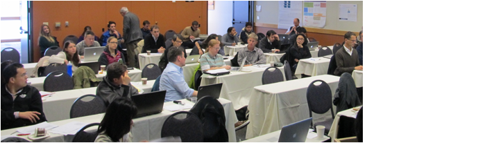
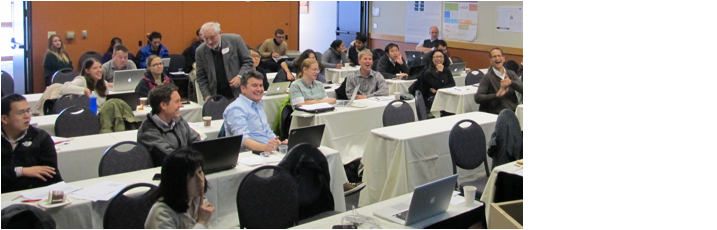

|
PMIP Ocean Workshop
2013 Understanding Changes since the Last Glacial Maximum Dec 4-6, 2013 Corvallis, Oregon |
|
A report is available here.
We had a great workshop with
intense working

and intense smirking.

Thanks everybody for coming!
Overview:
The Paleoclimate Model Intercomparison Project in its third phase (PMIP3)
includes simulations with comprehensive climate models of the Last Glacial
Maximum (LGM), the Mid-Holocene, and the last Millennium. PMIP3 results, some
of which are part of the Coupled Model Intercomparison Project 5 (CMIP5), are
becoming available for analysis now. An important task will be to evaluate the
ocean simulations including circulation patterns and strengths. Here we want to
facilitate this evaluation by updating existing datasets of surface and deep
temperatures, carbon isotopes ( and ), as well as other relevant proxies (e.g. Pa/Th, Nd)
including revisions of the chronologies and proxy uncertainties. Another goal
of the workshop will be to bring together sea-going paleoceanographers,
modelers, and statisticians in an effort to collaboratively improve our
understanding of ocean changes since the LGM.
and ), as well as other relevant proxies (e.g. Pa/Th, Nd)
including revisions of the chronologies and proxy uncertainties. Another goal
of the workshop will be to bring together sea-going paleoceanographers,
modelers, and statisticians in an effort to collaboratively improve our
understanding of ocean changes since the LGM.
Scientific questions addressed will include
- What were the temperatures,
salinities, and ice cover of the ocean since the LGM
- What
was the global deep ocean circulation and carbon cycle during the LGM and its
variability during the Late Holocene (LH)?
Methodological
issues
- What are issues in interpreting
proxies (e.g. ,  , SST
forams vs Mg/Ca, chronologies)
, SST
forams vs Mg/Ca, chronologies)
- How
can we use models and data together to address the scientific questions posed
above?
Organizational
issues
- Do we need a PAGES Working Group
- Do
we want to create a new INQUA International Focus Group?
The workshop
will contribute to a better understanding of the glacial carbon cycle and its
glacial-interglacial variations. Most current hypotheses explain lower glacial
CO2 concentrations in the atmosphere by more carbon storage in the
glacial ocean. However, the locations and reasons for changes in ocean carbon
storage remain mysterious. Carbon isotopes include important information on
past changes in ocean carbon cycle and circulation. However, their
interpretation is complicated by issues such as fractionation during air-sea
gas exchange (for ) and reservoir ages and other dating issues (for
radiocarbon). Other proxies such as Pa/Th and Nd isotopes include additional,
sometimes complimentary information but have their own uncertainties. Because
of these issues a promising strategy for a better understanding is a
combination of observations with process-based models aided by state-of-the
science statistical methods. We expect that this effort will uncover many
unpublished data, result in improved chronologies, better quantification
of uncertainties and application of advanced statistical methods of model-data
fusion.
Deadlines:
Registration,
abstract submission, and application for travel support: Sep. 08, 2013
Support:
This
workshop is funded by the Marine Geology and Geophysics Program of the National
Science Foundation (NSF), the Past Global Changes (PAGES) project of the International
Geosphere-Biosphere Program (IGBP), and by the International Union for
Quaternary Research (INQUA). Limited funding
for travel expenses is available. Particularly early career researchers and
scientists from developing countries are encouraged to apply.
To register
send abstract via email to Andreas
Schmittner: aschmitt(at)coas.oregonstate.edu.
Notification
of accepted abstracts and travel support applications will be send by Sept. 15,
2013.
Organizing committee: A. Schmittner, A. Mix, S.
Khatiwala, A. Abe-Ouchi, S. Mulitza, N. Urban
Funded by the Marine
Geology and Geophysics program of the National Science Foundation and Past
Global Changes (PAGES).